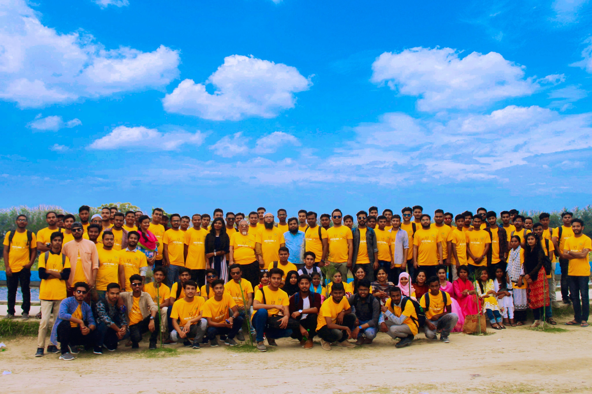
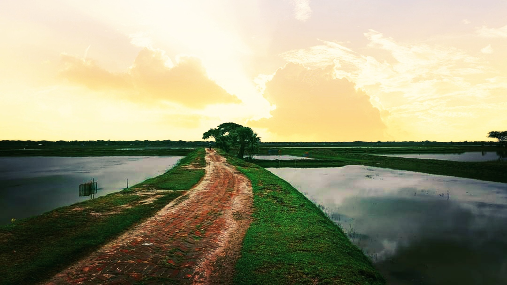

Our post title here
In the rural perspective, most of the women are housewives and moreover some farmer, businessman, fisherman, student and one journalist also have been got as respondents of the study. 24 percent of the sample have been found housewife, so do the fisherman. As the study has been conducted on coastal area, most of the people have been found fisherman or involved with fish related business by born. Though the women of the coastal area are counting as housewives but they frequently help their husbands in works without any salary. There have been found fourteen percent farmers, sixteen percentage businessmen. Meanwhile twenty percentage students have been interviewed while one has been found as journalists. Since the area is severally attacked by several disasters and considering rural area, there have not found any service holder among listeners. Though around 25 percentage of total respondents have been found as housewives,
Our post title here
In the rural perspective, most of the women are housewives and moreover some farmer, businessman, fisherman, student and one journalist also have been got as respondents of the study. 24 percent of the sample have been found housewife, so do the fisherman. As the study has been conducted on coastal area, most of the people have been found fisherman or involved with fish related business by born. Though the women of the coastal area are counting as housewives but they frequently help their husbands in works without any salary. There have been found fourteen percent farmers, sixteen percentage businessmen. Meanwhile twenty percentage students have been interviewed while one has been found as journalists. Since the area is severally attacked by several disasters and considering rural area, there have not found any service holder among listeners. Though around 25 percentage of total respondents have been found as housewives.In the rural perspective, most of the women are housewives and moreover some farmer
Our post title here
post image"/>In the rural perspective, most of the women are housewives and moreover some farmer, businessman, fisherman, student and one journalist also have been got as respondents of the study. 24 percent of the sample have been found housewife, so do the fisherman. As the study has been conducted on coastal area, most of the people have been found fisherman or involved with fish related business by born. Though the women of the coastal area are counting as housewives but they frequently help their husbands in works without any salary. There have been found fourteen percent farmers, sixteen percentage businessmen. Meanwhile twenty percentage students have been interviewed while one has been found as journalists. Since the area is severally attacked by several disasters and considering rural area, there have not found any service holder among listeners. Though around 25 percentage of total respondents have been found as housewives,